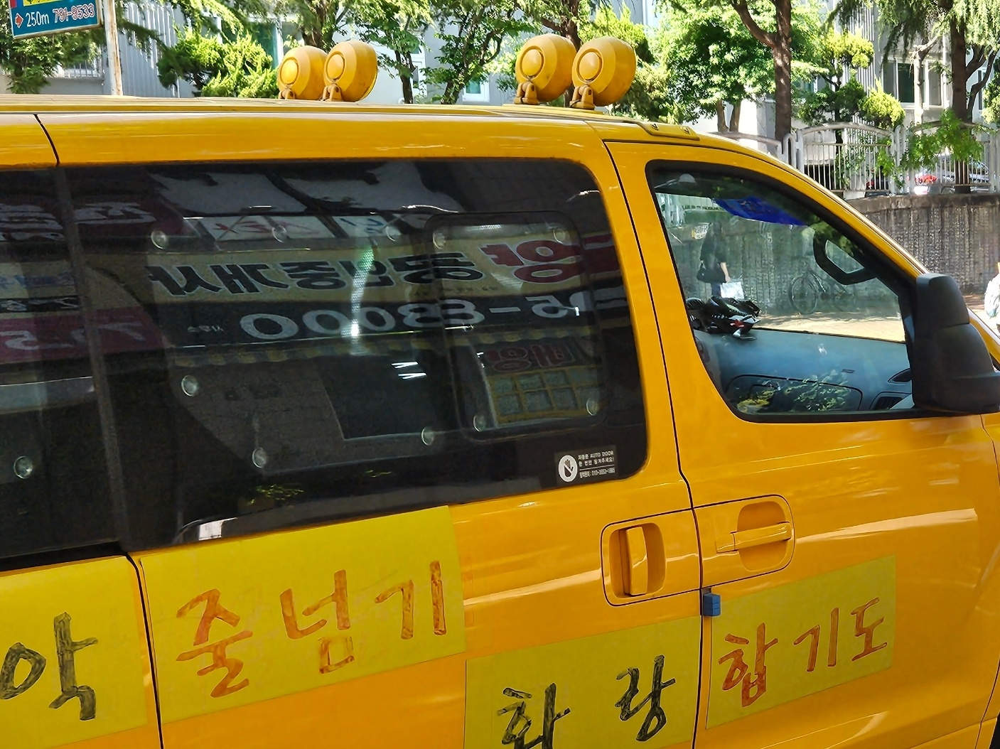
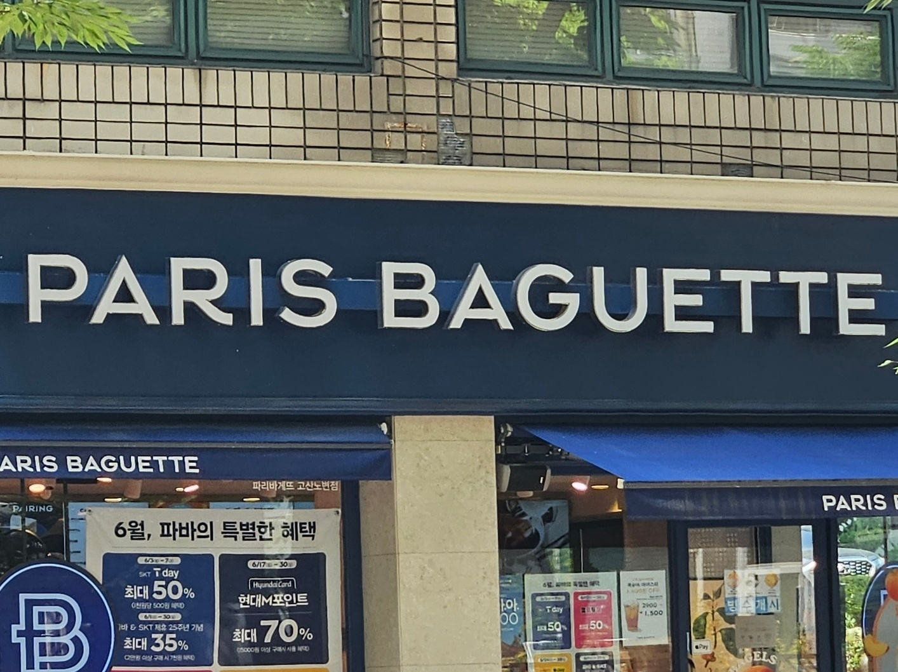

상징
빨강은 정지 · 금지 · 위험 · 경고를 뜻하는 색이다. 안전색채로는 금지 표지, 소화기, 경보기, 긴급 정지 표지 등에 쓰인다. 초록은 빨강과 정반대인 색이다. 평화와 안전 등을 상징한다. 안전색채에서는 안전과 진행 및 구급, 구호의 뜻으로 쓰인다. 대부분의 비상구를 초록색을 띤다. 초록색은 먼 거리에서 잘 보이는 정도인 명시성이 놓아 어두운 곳에서도 멀리서 잘 보이는 색이다. 또한, 눈의 망막에는 어두운 곳에서 빛을 감지하는 간상체가 있다. 간상체는 초록색을 가장 잘 받아들인다. 비상상황이 어두운 상황에서 많이 발생하는 상황이 많은 이유로 초록색이 사용한다. 과속방지턱은 노랑과 하양으로 이루어져 있다. 운전자가 과속방지턱을 미리 인지하여 사전에 충분하게 속도를 줄일 수 있는 효과를 내기 위하여 노랑, 하양 반사성 도료를 사용한다.
의미
꽃에서의 색은 색에 따라 다른 꽃말을 의미한다. 사진의 꽃 종류는 메리골드이다. 주황색 메리골드는 행복, 따뜻함, 에너지를 상징한다. 노란색 메리골드는 우정, 예언, 긍정적인 에너지를 의미한다.
 대표
어린이 통학 차량은 국내에서 자동차가 1000만 대를 돌파하는 시기에 어린이의 안전을 위해서 황색으로 통일되었다. 이 지정으로 우리가 길을 걷다가 황색 차량을 보면 어린이 통학 차량으로 인식할 수 있다. 학교나 브랜드를 생각하면 그 대상을 대표하는 색이 떠오른다. 로고나 이미지에 연관 지어 떠올리는 색은 사람들을 대상으로 각인시킨다.